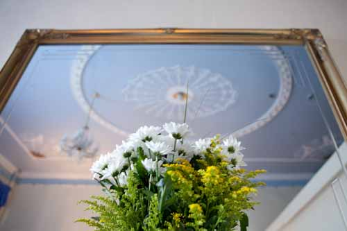
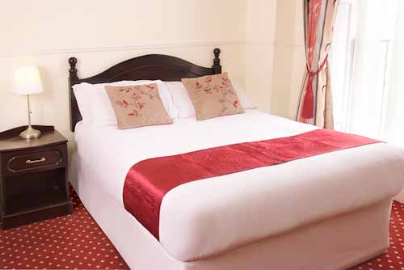
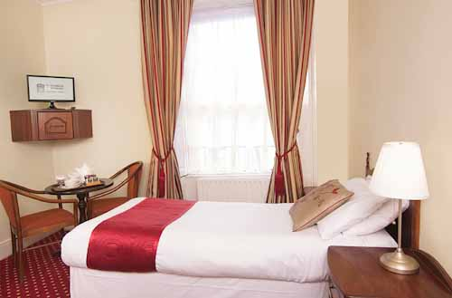

Home
Book now
- 
-

- 
- 
-
Great Location
The Charles Stewart Guesthouse is a unique property in the heart of Georgian Dublin, and is a charming Bed and Breakfast Accommodation in Dublin City centre.
-
History
It's historic features have been preserved and each bedroom is tastefully decorated in keeping with it's surroundings. The premises has many historical connections being the birthplace and early childhood home of Oliver St.John Gogarty. Oliver St John Gogarty was an Irish physician and surgeon, who was also a poet and writer, one of the most prominent Dublin wits and for some time a political figure of the Irish Free State. He was a colleague of James Joyce and was the inspiration for one of his characters in Ulysses.
-

Shopping
It is just a minutes walk from the principal shopping streets and only 5 minutes from the ever popular Temple Bar area. It is also within easy walking distance from Trinity College, Grafton Street, St Stephen's Green and The National Gallery. The nearest LUAS (tramline) stop is nearby off O' Connell Street which services both Intercity Rail Stations and The O2 events arena.
-

Excellent Amenities
All rooms are ensuite and equipped with tv and tea and coffee facilities. Other features include in-room safes, ironing facilities and complimentary wifi access. Rooms are serviced daily and fresh towels and toiletries are replaced. Full Irish Breakfast is included in all room rates which consists of a delicious hot plate of bacon, egg, irish sausage, and tomato served along with toast ,irish soda bread and tea/coffee. Self service cereal and fresh fruit and fruit juicce is also available.